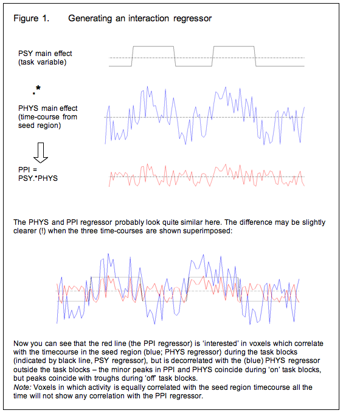
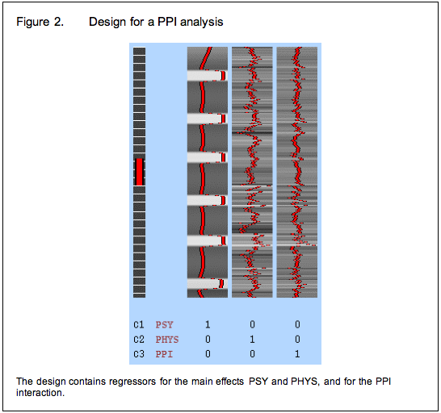

What is PPI?
An introduction to psychophysiological interactions analysis - logic, when to use it etc.
Most of the content of this web page, together with some new material relating PPI to resting state analysis, is now published as a 'Tools of the Trade' article in SCAN:
Tools of the Trade: Psychophysiological Interactions and Functional Connectivity. O'Reilly JX, Woolrich MW, Behrens TE, Smith SM, Johansen-Berg H. Soc Cogn Affect Neurosci. 2012 May 7. [Epub ahead of print] PMID: 22569188
If you use this resource to help you in your PPI analyses, please cite the paper above. Thanks!
How to actually run a PPI analysis in Feat
PPI (psychophysiological interactions) is a method for finding out whether the correlation in activity between two distant brain areas is different in different psychological contexts – in other words whether there is an interaction between the psychological state and the functional coupling between two brain areas.
A hypothetical example…
Say we had run an experiment where participants have to navigate through a virtual reality maze (compared to a control condition where they travel passively through a maze), and we found that prefrontal cortex and hippocampus were active for navigation – that is, in the GLM contrast [navigation–passive travel]. We might come up with (at least) two possible explanations: 1) the prefrontal cortex and hippocampus were both independently active in the navigation condition (say, because navigation requires planning which involves the PFC, and because navigation requires spatial information which is stored in the hippocampus) 2) The PFC and HPC work together interactively in navigation – perhaps some ‘top down’ signal from the PFC causes retrieval of information in the hippocampus, which is then passed back to the prefrontal cortex. A PPI analysis could help us distinguish between these two hypotheses by telling us whether the correlation in activity between the two areas, rather than activity itself, increased in the navigation task.
Correlations
How do we go about looking for areas which interact with the hippocampus? The first principle underlying PPI is that if two areas are interacting, the level of activity in those areas will correlate over time – in other words if activity in the two areas increases and decreases ‘in synch’ this suggests that there is a functional association between them.
So we have a basic strategy: we can extract the time-course from some representative voxel in the hippocampus and run a GLM using this hippocampal activity time-course the explanatory variable. Areas with a high Z-score are the ones which vary their activity ‘in synch’ with the hippocampus.
Psychophysiological interactions
The second principle underlying PPI analysis is that the interactions between areas may change in different psychological contexts, and this will be reflected in a change in correlation between the time-courses of those areas. Say, for example, that when people navigate around a maze, the hippocampus and the prefrontal cortex interact as people use spatial information (represented in the hippocampus) to plan their route (as planning requires PFC) – but in the passive travel condition these two regions do not interact. Then we would expect the correlation in activity between the two regions to be higher during the navigation condition than during the passive travel condition. In a psychophysiological interactions analysis, we particularly look for areas which have a higher correlation with the time-course in the seed region in one psychological context (task block) than another.
To put this another way, it is quite likely that some brain regions will share a time-course of activity with your seed region but that this correlation has nothing to do with your experiment per se – for example, regions which are anatomically connected, regions which share neuro-modulatory influences and regions which share sensory input will all have correlated time-courses regardless of what experiment you are doing. In PPI we are only interested in relationships which change with the task in your experiment, for example areas which interact during navigation but not during passive travel.
So now we modify the basic strategy: Instead of using the time-course of the seed region as an explanatory variable in the GLM, we generate an ‘interaction regressor’ and use this instead. Generally speaking, the interaction regressor will be the (demeaned) scalar product of the (demeaned) task time-course and the (demeaned) physiological time-course (time-course of activity in the seed region) although the generation of the interaction term is discussed in more detail below. Or, in other words, voxels in which the interaction term is a good description of activity are those in which the seed region’s time course has a stronger effect during the task blocks of interest than it does the rest of the time.

Covariates of no interest
So now we have a GLM in which the explanatory variable is the interaction term described above. This tells us which regions are more correlated with the seed region during the task of interest than at other times. But there is a problem with this approach: because we generated the interaction term as the product of the psychological and physiological ‘main effects’ variables, regions in which those main effects account for a lot of the variance will show up as being related to the interaction term. To spell this out:
1. We selected the (seed) region of interest on the basis that it was active in a certain contrast (in our example, navigation-passive travel), and therefore we are pretty much certain to see a correlation with all the other areas which were active in that contrast in our original GLM (because these also increase in activity during the navigation blocks). In other words, we will observe correlations which are driven by a shared task input, which is exactly what we already knew from the GLM analysis.
2. Voxels which have a similar time-course to the seed region, even if this is not task related, will have a positive correlation with the interaction term, although not as strong as those in which the correlation is task related.
To avoid these issues, we modify our strategy again and include the psychological and physiological time-courses from which we derived the interaction term in the GLM as covariates of no interest. This means that variance associated with the interaction term is only that over and above what is accounted for by the main effects of task and physiological correlation. This is the final PPI model.

Between subjects designs: an alternative approach
A few studies (listed below) have used PPI-like analyses in between-subjects designs, treating subject group as the ‘psychological’ variable. For example, Heinz et al (2005) investigated differences in coupling of the amygdala with the rest of the brain between people with different genotypes for the serotonin transporter gene SLC6A4. Because they were interested in a functional coupling which was assumed to be determined by genotype, which does not change over the course of the scanning session  they simply extracted the time-course of activity from an ROI in the amygdala and entered this into the GLM for each subject. The resulting maps simply showed which regions correlated in time-course with the amygdala in the three genetic groups.
they simply extracted the time-course of activity from an ROI in the amygdala and entered this into the GLM for each subject. The resulting maps simply showed which regions correlated in time-course with the amygdala in the three genetic groups.
Because, in this case, the authors used the whole time-series from their scanning session to compare between groups, there was no task regressor (PSY) to include in the model – effectively the PSY variable was genotype. Because of this, the ‘PPI’ regressor was exactly the same as the time-course of the amygdala ROI (PHYS) in each subject, so that was not included either – so only the PPI regressor was entered into the GLM for each individual. Clearly, this gets around the problem of correlated regressors described above.
The same approach has been used to compare patients with Turner syndrome to normal controls (Skuse et al 2005), to compare schizophrenic patients to healthy controls (Boksman et al 2005). By the same justification, we could use this approach to look at changes in functional connectivity following TMS or TDCS, or between patient and normal groups.
However, it seems to me that there is a problem with this approach. As long as people are doing a task during the scan sessions and the groups show different activation patterns during this task, the ‘PPI’ can be driven by a main effect of task. For example, in Heinz (2005), the non-carriers of the SLC6A4 allele showed higher amygdala activation in response to the aversive stimuli than to the neutral stimuli. Because the task contrast was not modelled in the ‘PPI’ analysis, any areas with the same task driven effect would show up as having higher ‘functional connectivity’ in the no-carrier group, because only the non-carriers showed an effect of task.
A way around this problem is to include only those portions of the time-course which correspond to the task blocks of interest, and to de-mean the seed time-course within these blocks to ‘partial out’ the main effect of task. Bear in mind that this approach would not detect a ‘main effect’ of task; the assumption is that since the task is the same, we are only interested in the between sessions effect.
Papers using some kind of between-subjects approach
Heinz A, Braus DF, Smolka MN, Wrase J, Puls I, Hermann D, Klein S, Grüsser SM, Flor H, Schumann G, Mann K & Büchel C (2004) Amygdala-prefrontal coupling depends on a genetic variation of the serotonin transporter Nature Neuroscience 8, 20 – 21
Boksman K, Theberge J, Williamson P, Drost DJ, Malla A, Densmore M, Takhar J, Pavlosky W, Menon RS, Neufeld RW. (2005) A 4.0-T fMRI study of brain connectivity during word fluency in first-episode schizophrenia. Schizophr Res. 15:247-63
Skuse DH, Morris JS, Dolan RJ. (2005) Functional dissociation of amygdala-modulated arousal and cognitive appraisal, in Turner syndrome. Brain. 128:2084-96
Bingel U, Lorenz J, Schoell E, Weiller C, Buchel C. (2006) Mechanisms of placebo analgesia: rACC recruitment of a subcortical antinociceptive network. Pain 120:8-15
TMS-Induced changes to a physiological network
A PPI-like approach can be used to look at how functional networks reorganise when one area in the network is ‘damaged’ by TMS. This method was used by:
O’Shea J, Johansen-Berg H, Trief D, Goebel S and Rushworth MFS (2007). Functionally specific reorganisation in human premotor cortex Neuron 54: 479-490
They looked at action selection, which engages the dorsal pre-motor cortex, particularly the dominant left PMd (L PMd). They compared activation in an action selection task with a simple motor control task, before and after disrupting the L PMd with a 15 min 1 Hz TMS train – a type of stimulation which causes local suppression of activity lasting several minutes.
As expected, the TMS had the effect of suppressing activity in L PMd. They then asked: can suppression of activity in L PMd account for changes in activity in other brain areas (which had not been directly affected by TMS)? To do this, they generated ‘PPI’ regressors with the following properties: during the selection task blocks, the PPI regressor was the same as the (demeaned) time-course of activity in L PMd; during the control task blocks the PPI regressor was the negative (x -1) time-course of L PMd; and outside the task blocks, it was zero. In other words, the PPI regressor reflected the activity of L PMd in the task contrast selection-control. They then compared the ‘PPI’ effects before and after TMS, to see how the changed response of L PMd to the task fed into other brain areas.
Note that this approach is rather different from the (typical) PPI analyses described above, which look for effects over and above the main effect of psychological task. Here, the main effect of task was not removed from the data in any way, but was assumed to be the same between sessions, whilst the only difference between sessions was how the main effect of task was mediated by activity in L PMd, which was suppressed after TMS. Thus this approach answers a different question from a typical PPI analysis.
Issues
Click here for a discussion of some caveats.
Reference
PPI was originally implemented in SPM. You can read the original paper in NeuroImage:
Neuroimage. 1997 Oct;6(3):218-29.
Psychophysiological and modulatory interactions in neuroimaging. Friston KJ, Buechel C, Fink GR, Morris J, Rolls E, Dolan RJ.